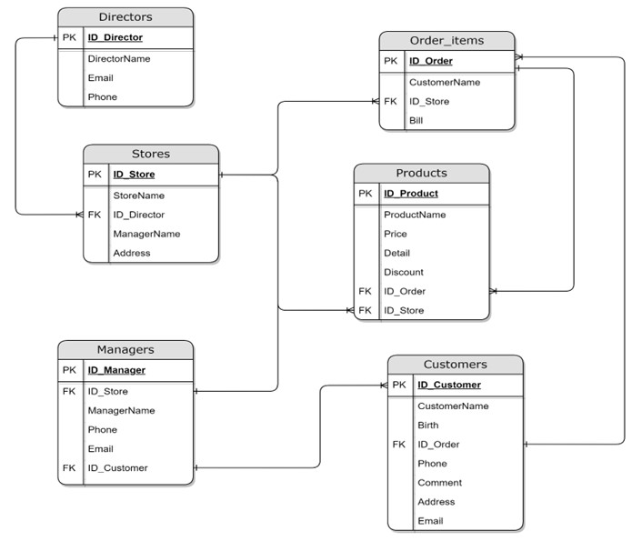
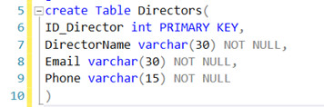
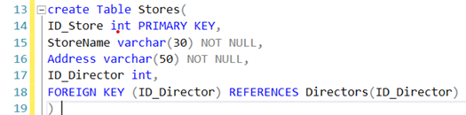
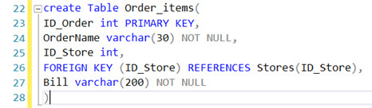
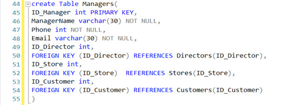
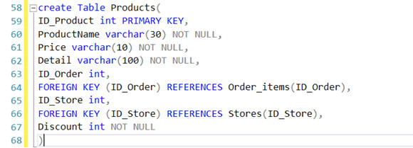
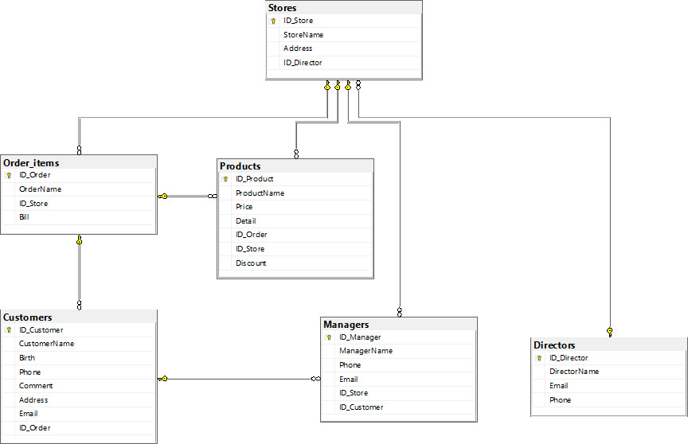
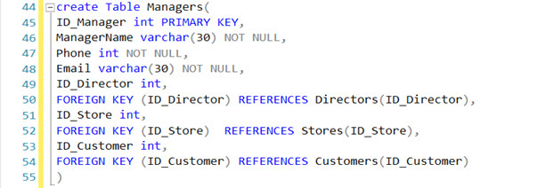
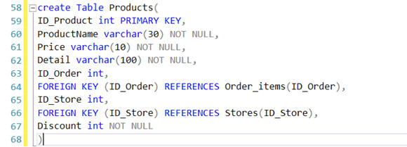
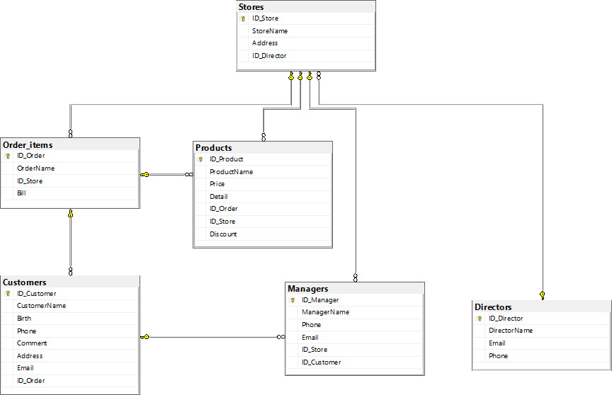

P1. Design a relational database system using appropriate design tools and techniques, containing at least four interrelated tables, with clear statements of user and system requirements.
D1. Assess the effectiveness of the design in relation to user and system requirements.
M1. Produce a comprehensive design for a fully functional system which includes interface and output designs, data validations and data normalisation.
1. Statements of user and system requirements (P1)
1.1 Overview about the Problem
My job is Database Developer for a large IT consulting company. Currently FPT Shop is expanding and has problems with handling the database from all branch stores. So, I was assigned the job of developing the database for FPT Shop.
1.2 Requirements of the application
My mission is:
• Work with FPT Shop to find out about current requirements for each system
• Analyse the requirements and produce clear statements of user and system requirements.
• Design a relational database system using appropriate design tools and techniques
• Develop a fully functional relational database system, based on an existing system design.
• Test the system against user and system requirements.
• Produce technical and user documentation
Then I will develop a new database to:
- User can register with their phone number as IDs
- Order or rate, comment on their purchased devices
- Store managers can take care of their stores
- Management can see all data from all stores.
The system must have at least 4 user roles, including business processes for FPT Shop management, management and customers.
System must include CRUD (Create/Read/Update/Delete) actions and at least 5 advanced statistics actions.
2. Design the relational database system (P1 – M1)
2.1 Analyse the requirements
With the request:
- Directors can view all stores' data
- The manager can take care of the store
- Customers can register phone numbers as IDs, place orders or rate and comment on the devices they have purchased.
- Store is a place to store data such as orders, invoices, managers
I will create 6 tables:
- Directors
- Stores
- Managers
- Customers
- Order_items
- Products
2.2 Database design with explanations

Figure 1: Database Design Model
Directors Table:
- ID_Director (PRIMARY KEY)
- DirectorName
- Email
- Phone
Stores Table:
- ID_Store (PRIMARY KEY)
- StoreName
- ID_Director (FOREIGN KEY)
- ManagerName
- Address
Managers Table:
- ID_Manager (PRIMARY KEY)
- ID_Store (FOREIGN KEY)
- ManagerName
- Phone
- Email
- ID_Customer (FOREIGN KEY)
Customers Table:
- ID_Customer (PRIMARY KEY)
- CustomerName
- Birth
- ID_Order (FOREIGN KEY)
- Phone
- Comment
- Address
- Email
Order_items Table:
- ID_Order (PRIMARY KEY)
- OrderName
- ID_Store (FOREIGN KEY)
- Bill
Products Table:
- ID_Product (PRIMARY KEY)
- ProductName
- Price
- Detail
- Discount
- ID_Order (FOREIGN KEY)
- ID_Store (FOREIGN KEY)
In order for the director table to manage all the store's data, I use a foreign key in the Store table, which is ID_Director. This is a one-to-many relationship.
The store table can manage information from the product table, the order table, and the management panel. Through the foreign key ID_Store at these tables. In addition, the management table can also do the reverse for the store table, which is a one-to-one relationship. While the relationship of the store table with the 2 tables of orders and products is a one-to-many relationship.
For the orders table, the primary key is ID_Order, which will be associated with the products table and the customer table, through the foreign key ID_Order in these two tables. The relationship between the orders table and the products table is one-to-many, and the orders table and the customers table is a many-to-one relationship.
2.3 Review whether the database is normalized
The database on 3NF is already normalized, so I don't need to normalize anymore.
2.4 Data validation
No. Field Data type Constraint Description
1 ID_Director int PRIMARY KEY Director unique ID
2 DirectorName varchar(30) NOT NULL Director Name
3 Email varchar(30) NOT NULL Director Email
4 Phone varchar(15) NOT NULL Director Phone
Table 1: Director

Figure 2: Create table Directors
No. Field Data type Constraint Description
1 ID_Store int PRIMARY KEY Store unique ID
2 StoreName varchar(30) NOT NULL Store Name
3 Address varchar(50) NOT NULL Store Address
4 ID_Director int FOREIGN KEY Director unique ID
Table 2: Store

Figure 3: Create table Stores
No. Field Data type Constraint Description
1 ID_Order int PRIMARY KEY Order unique ID
2 OrderName varchar(30) NOT NULL Order Name
3 ID_Director int FOREIGN KEY Director unique ID
4 Bill varchar(200) NOT NULL Order Bill
Table 3: Order_items

Figure 4: Create table Order_items
No. Field Data type Constraint Description
1 ID_Customers int PRIMARY KEY Customers unique ID
2 CustomerName varchar(30) NOT NULL Customers Name
3 Birth DATETIME NOT NULL Customers Birth
4 Phone int NOT NULL Customers Phone
5 Comment varchar(100) NOT NULL Customers Comment
6 Address varchar(100) NOT NULL Customers Address
7 Email varchar(50) NOT NULL Customers Email
8 ID_Order int FOREIGN KEY Director unique ID
Table 4: Customers
 Figure 5: Create table Customers
No. Field Data type Constraint Description
1 ID_Manager int PRIMARY KEY Manager unique ID
2 ManagerName varchar(30) NOT NULL Manager Name
3 Phone int NOT NULL Manager Phone
4 Email Varchar(30) NOT NULL Manager Email
5 ID_Director int FOREIGN KEY Director unique ID
6 ID_Store int FOREIGN KEY Store unique ID
7 ID_Customer int FOREIGN KEY Customer unique ID
Table 5: Managers

Figure 6: Create table Managers
No. Field Data type Constraint Description
1 ID_Product int PRIMARY KEY Product unique ID
2 ProductName varchar(30) NOT NULL Product Name
3 Price varchar(10) NOT NULL Product Price
4 Detail varchar(100) NOT NULL Product Detail
5 ID_Order int FOREIGN KEY Order unique ID
6 ID_Store int FOREIGN KEY Store unique ID
Table 6: Products

Figure 7: Create table Products

Figure 8: Database Diagrams
Figure 5: Create table Customers
No. Field Data type Constraint Description
1 ID_Manager int PRIMARY KEY Manager unique ID
2 ManagerName varchar(30) NOT NULL Manager Name
3 Phone int NOT NULL Manager Phone
4 Email Varchar(30) NOT NULL Manager Email
5 ID_Director int FOREIGN KEY Director unique ID
6 ID_Store int FOREIGN KEY Store unique ID
7 ID_Customer int FOREIGN KEY Customer unique ID
Table 5: Managers

Figure 6: Create table Managers
No. Field Data type Constraint Description
1 ID_Product int PRIMARY KEY Product unique ID
2 ProductName varchar(30) NOT NULL Product Name
3 Price varchar(10) NOT NULL Product Price
4 Detail varchar(100) NOT NULL Product Detail
5 ID_Order int FOREIGN KEY Order unique ID
6 ID_Store int FOREIGN KEY Store unique ID
Table 6: Products

Figure 7: Create table Products

Figure 8: Database Diagrams